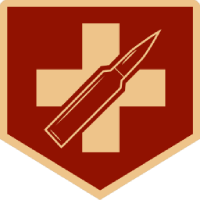

O que é o Modo Zombies?
Zombies, originalmente conhecidos como Nazi Zombies, apareceram primeiramente no Call of Duty: World at War. Se tornou bastante popular logo no lançamento do jogo, e retornou com uma sequência no Call of Duty: Black Ops e de novo no Call of Duty: Black Ops II. No modo Zombies, os jogadores enfrentam zumbis de diferentes nacionalidades, dependendo da localização do mapa, incluindo Nazistas, Americanos, Russos e Asiáticos.
"Sobreviva as rondas de zumbis sozinho ou cooperativamente. Mate rodadas após rodadas de zumbis mortais em diversos locais assustadores. Mas cuidado: tem mais do que simples zumbis espreitando esses corredores escuros..."
Descrição do modo no manual do jogo Call of Duty: Black Ops
Wiki Zombies BrasilObjetivo do Modo
No modo Zombies, os jogadores enfrentam zumbis de diferentes nacionalidades, dependendo da localização do mapa, incluindo Nazistas, Americanos, Russos e Asiáticos. De um a quatro jogadores devem sobreviver rodadas infinitas de zumbis, ganhando pontos matando zumbis e reconstruindo barreiras.
Esses pontos podem ser usados para comprar armas e Perk-a-Colas, ou desbloquear novas áreas e ativar outros objetos especiais. Os zumbis entram na área acessível dos jogadores através de janelas, buracos em paredes ou escalando por uma superfície "sujas", q geralmente estão com barreiras mas q são rapidamente destruídas pelos zumbis.
Elas podem ser reconstruídas, menos as superfícies sujas (raisers, como são chamados em inglês). Não existe limite de rodadas; o jogo termina quando os jogadores forem mortos pelos zumbis. Os zumbis se tornam mais fortes e rápidos com o passar das rodadas, forçando os jogadores a desenvolver estratégias sobre gastar seus pontos e progredir no mapa.
Franquia de Jogos
Vantagens
| Nome | Efeito | Logo |
|---|---|---|
| Juggernog | amplia a vida máxima do jogador; podendo sobreviver até 5(cinco) hits de um zumbi padrão, se comparado aos 2(dois) ou 3(três) hits iniciais de cada partida. |  |
| Quick Revive | Faz o jogador reviver seus aliados duas vezes mais rápido ou permite que o jogador se reanime | |
| Speed Cola | Faz com que os jogadores consigam recarregar mais rapidamente qualquer arma; Faz com que os jogadores consertem as barricadas mais rapidamente; Faz com que os jogadores mirem suas armas mais rapidamente. | |
| Double-Tap |